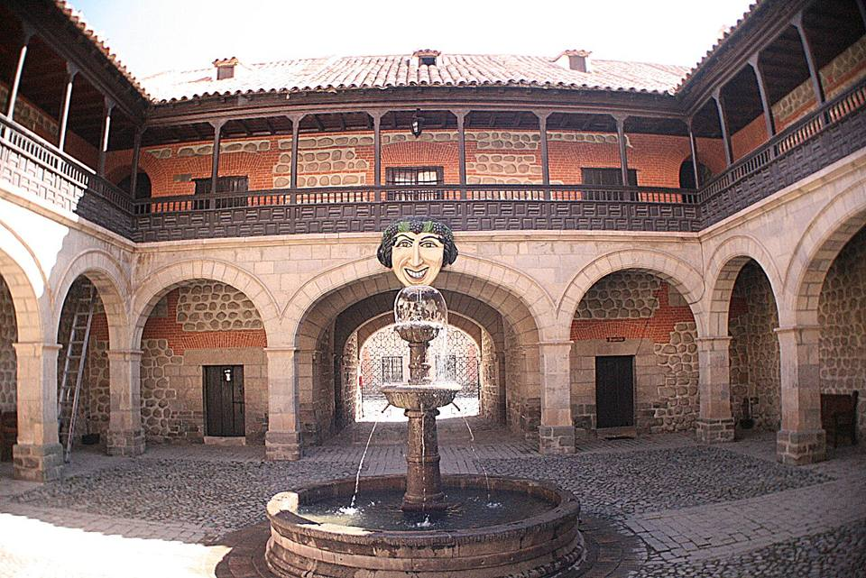
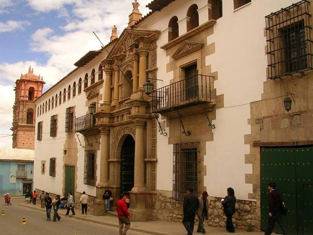
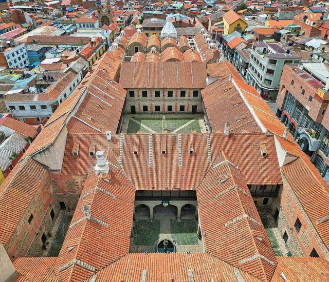
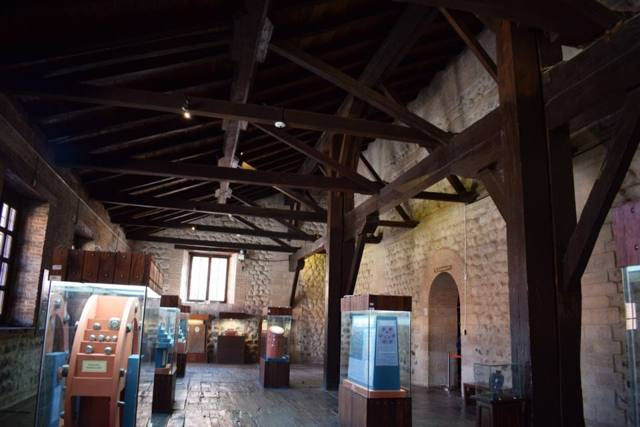
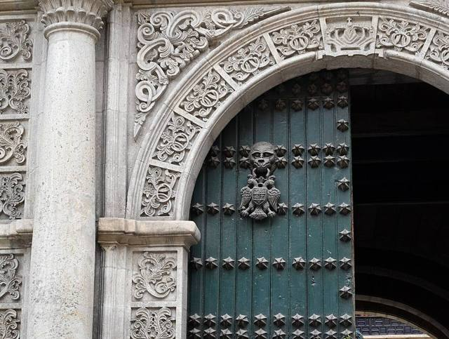

Casa Nacional de Moneda (Potosí)
Département de Potosí · Culture et histoire

Construite entre 1753 et 1773 pour frapper l'argent du Cerro Rico, la Monnaie de Potosí est l'un des plus grands édifices civils de l'Amérique coloniale. Ses murs épais abritent encore les laminoirs en bois que faisaient tourner des mules, les fours de fonte et les pièces frappées pendant trois siècles. On y voit aussi de la peinture coloniale (dont la célèbre Vierge du Cerro) et, dans la cour, le mascarón, ce grand visage souriant devenu le symbole de la ville.
4 067 maltitude
0 à 1 joursur place
Haute altitude. Au-dessus de 3 500 m, le mal des montagnes (soroche) est fréquent. Arrivez progressivement, buvez beaucoup et ralentissez le premier jour.
À faire
- Visite guidée des salles de frappe et des laminoirs en bois
- La Vierge du Cerro et la peinture de l'école de Potosí
- Le mascarón de la cour intérieure
À goûter
Conseil. Visite guidée seulement (environ 2 h, en espagnol ou en anglais selon l'horaire), en général fermé le lundi. Les salles sont froides : garder une veste.
Comment aller à Casa de Moneda
Potosí Route (bus, voiture) · 5 min à pied
À une rue de la place principale (10 de Noviembre).
Photos de Casa Nacional de Moneda (Potosí)








Autres lieux de la région
 PotosíL'ancienne ville la plus riche du monde grâce à l'argent du Cerro Rico. Classée UNESCO.
PotosíL'ancienne ville la plus riche du monde grâce à l'argent du Cerro Rico. Classée UNESCO. Ojo del Inca (Tarapaya)Une lagune d'eau chaude parfaitement ronde, à 30 minutes de Potosí.
Ojo del Inca (Tarapaya)Une lagune d'eau chaude parfaitement ronde, à 30 minutes de Potosí. SucreLa « ville blanche », capitale constitutionnelle : la plus belle ville coloniale du pays.
SucreLa « ville blanche », capitale constitutionnelle : la plus belle ville coloniale du pays. TarabucoGrand marché du dimanche des communautés yampara, textiles remarquables.
TarabucoGrand marché du dimanche des communautés yampara, textiles remarquables.- CandelariaVillage yampara au-delà de Tarabuco : ancienne hacienda, tissages et tourisme rural.
- ZudáñezPetite ville de vallée liée aux guerres d'indépendance, à l'est de Sucre.
 Cratère de MaraguaSynclinal géant aux couleurs rouges et violettes, villages de tisserands jalq'a.
Cratère de MaraguaSynclinal géant aux couleurs rouges et violettes, villages de tisserands jalq'a.